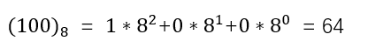
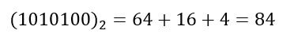
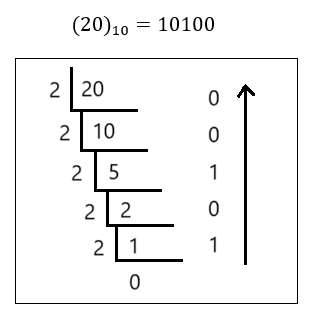

【Java】Java语言基础（二）
一、基础部分
1. 关键字keyword
全是小写，能被虚拟机识别。goto 和 const 是保留字（现在保留，可能会成为关键字）。
2.标识符
作用：起名字。
组成：$ _ 数字 英文大小写 （不能以数字开头）
常见的命名规则：
- 见名知意
- 包：其实就是文件夹，用于把相同的类名进行区分
- 单级包（全部小写）：wangty
- 多级包（用
.隔开）：cn.wangty –指cn包下的wangty包
- 类/接口
- 一个单词组成，首字母大写：Student、Dog
- 多个单词组成，大驼峰：HelloWorld
- 方法/变量
- 一个单词，首字母小写：main方法、name变量
- 多个单词，小驼峰：studentAge
- 常量
- 一个单词，全部大写：PI 圆周率
- 多个单词，全部大写，以
_隔开：STUDENT_MAX_AGE
{ }中可以写：结构定义语句、功能执行语句3.注释
用于解释说明程序，调试排错
- 单行注释：
// - 多行注释：
/* */（不能嵌套使用） - 文档注释：
/** */（被javadoc工具解析，生成一个说明书，面向对象部分讲解）
4.常量
执行过程中，其值不可发生改变。
使用final关键字申明（前端一般使用const申明），只能进行一次赋值
- 字面值常量
- 字符串常量：双引号括起来的内容，例：
"Hello" - 整数常量：所有整数，例：
100 - 小数常量：所有小数，例：
0.11111 - 字符常量：单引号括起来的内容，例：
'A' - 布尔常量：真/假，例：
truefalse - 空常量：
null
- 字符串常量：双引号括起来的内容，例：
- 自定义常量
5.进制
1) 定义
表示进位的方式。（X进制：逢x进一）
计算机的电子原件状态：开/关 ，用数字1/0 表示
表达数据的时候，国际化标准组织规定，用8个这样的信号来表示一个数据，单位为字节
- ob开头：2进制
- o开头：8进制
- ox开头：16进制
2) 进制转换
X → 10
进制的转换：（任意进制 → 十进制）
- 系数：每一个位上的数值本身，成为系数
- 基数：X进制，基数为X
- 权：从右开始，以0开始编号，即为该位上权值

示例：2进制 转 10进制

示例：8进制 转 10进制
示例：16进制 转 10进制

8421码
8421码：用于2进制与10进制的快速转换
| 2 | 1 | 1 | 1 | 1 | 1 | 1 | 1 | 1 |
|---|---|---|---|---|---|---|---|---|
| 10 | 128 | 64 | 32 | 16 | 8 | 4 | 2 | 1 |
示例：2进制 转 10进制
将不同权位上为1的，对应位置上的数值相加
示例：10进制 转 2进制
左添0，从高位寻起，有则为1；相减，无则为0。去掉左0，添ob标识
| 10 | 100 | 100 | 36 | 4 | 4 | 4 | 0 | 0 |
|---|---|---|---|---|---|---|---|---|
| 10 | 128 | 64 | 32 | 16 | 8 | 4 | 2 | 1 |
| 2 | 0 | 1 | 1 | 0 | 0 | 1 | 0 | 0 |

10 → X
进制的转换：（十进制 → 任意进制）
商为0时结束，倒写余数。除基取余，直到商为0，余数反转。
示例：10进制 转 2进制
示例：10进制 转 8进制

示例：10进制 转 16进制

X → Y
任意进制之间转换：（X → Y）
以10进制做桥梁，X → 10，10 → Y
6.有符号数据表示法
在计算机内，有符号数有3中表示法：原码、补码、反码
在计算机操作的时候，都是采用数据对应的二进制补码来计算的。
原码：二进制定点表示法，最高位为符号位，"0"表示正，"1"表示负，其余表数值的大小
示例：±7。首先得到7的二进制为111
| 原码 | 符号位 | 数值位 | |
|---|---|---|---|
| +7 | 0 | 0000111 | 总共8为，不为1的补0 |
| -7 | 1 | 0000111 | 总共8为，不为1的补0 |
反码：正数的反码与其原码相同。负数的反码，对其原码逐为取反，但符号位除外。
| 反码 | 符号位 | 数值位 | |
|---|---|---|---|
| +7 | 0 | 0000111 | |
| -7 | 1 | 1111000 | 对应取反 |
补码：正数的补码与其原码相同。负数的补码，是在反码的基础上加1
| 反码 | 符号位 | 数值位 | |
|---|---|---|---|
| +7 | 0 | 0000111 | |
| -7 | 1 | 1111001 | 加在尾部，若要进位则进 |
2个练习加深印象：
- 已知X的原码10110100B，求补/反码
- 第一个符号位，为1，该数为负数
- 原码B表示二进制
- 反码：0 1001011
- 补码：0 1001100 （注意进位）
- 已知X补码11101110B，求原码
- 补码减1，注意借位，不够往前借
- 补码：1 1101110
- 反码：1 1101101
- 原码：1 0010010
7.变量
内存中的一小块区域。
|
|
- 变量相加：先提升数据，再计算运行
- 常量相加：先计算结果（调试、编译），再赋值。再检测数据类型范围，超出则报错
|
|
- 字符串相加：其
+表示为连接符。结果为：字符串 - 数值相加：其
+表示为运算符。结果为：计算结果
|
|
- 定义Long类型变量，
1L。 - 定义Float类型变量，
1f。 - 整数默认为int，浮点默认为Double
- byte、short在定义时，他们接受的其实是一个int类型的值。（做了一个数据检测，如果不再它们的范围内，就报错）
- byte值的问题
|
|
8.默认类型转换
char(2)、byte(1)、short(2) → int(4) → long(8) → float(4) → double
为什么 ‘8字节’ 可以转换为 ‘4字节’？
-
long：8字节，整数存储
-
float：4字节，浮点型存储
-
它们底层的存储类型不同，float类型在计算机中只使用4个字节存储，遵循IEEE-754格式标准。一个浮点数有两个部分构成：
-
底数m：以二进制数表示词浮点数的实际值，占24bit，高位始终为1。
-
指数e：占用8bit的二进制数，范围0-255。有±，减127才是真正的指数
-
例如：
17.625存储- 二进制：10001.101
- 整数部分：除以2，商为0，余数反转。（10001.101）
- 小数部分：乘以2，乘位为0，进位顺序取（1.0001101高位恒为1）
- 右移至小数点前只有1位，2→3，需移动4位，指数加127 = 4 + 127=131
- 131二进制：10000011
结果为：0 1000001 10001101 00000000 00000000
符号位 指数 底数 0 10000011 0001101 0…0
-
-
float表示的数据范围比long大
证明：

-
char能存一个中文字符，一个字符2个字节。java语言采用Unicode编码。
9.运算符
1) 算术运算符（Operator）
+、-、×、÷、%、++、--
例一：a = 10； b = 10 ；c = 10；
|
|
例二：x = 4
|
|
2）赋值运算符
=、+=、-=、*=、/=、%=
例一：short s = 1；
|
|
3）比较运算符（关系运算符）
<、>、<=、>=、!=、==、instanceof
结果都是boolean类型，只要有一个满足条件就可以
4）逻辑运算符
&与 ：同真为真|或 ：同假为假^异或：同名为假，异名为真!非 ：取反&&短路与 ：左假右不管||短路或 ：左真右不算
左右必须都是布尔型表达式。
5）位运算符（2进制）
<<扩大，正数补0，负数补1>>缩小，正数补0，负数补1&、|、^当两边为数据做的是“位运算”，两边为表达式做的是“逻辑运算”~、>>>无符号右移，全补0
例一：某一个数据对另一个数据位异或两次，数据不变
|
|
例二：将两个变量所携带的整数进行交换。a换成b，b换成a
|
|
|
|
|
|
|
|
10.键盘录入数据（Scanner）
-
导包
1import java.util.Scanner; -
创建键盘录入对象
1Scanner sc = new Scanner(System.in); -
通过对象获取数据
1 2int x = sc.nextInt(); //键盘录入 整数值 String s = sc.nextLine(); //键盘录入 字符串
例一：
|
|
11.流程控制语句
1）顺序结构
|
|
2）选择结构（if/switch）
|
|
|
|
if/switch的区分：
- Boolean用if
- 1000上万数据用if
- 小数范围用if
- 针对几个常量值情况用switch
3）循环结构（for/do-while）
for循环语句
|
|
例一：输出1~10
|
|
例二：求1~10的数据和
|
|
例三：求1~100之间的偶数和
|
|
例四：求5的阶乘
|
|
例五：水仙花数（求所有水仙花数）
|
|
while循环语句
可以与for循环等价转换
|
|
例一：按照for语句，交换各项位置
|
|
do-while循环语句
|
|
|
|
三种循环的区别：
- do-while至少执行一次循环体
- while、for必须判断条件再循环（只有这一个区别）
死循环：
ctrl+c 强制停止循环。一定注意造成死循环是因为没有写条件控制
12.跳转控制语句
1）break中断
break使用场景（离开下面两个场景，无意义）
- switch语句中
- 循环语句中
|
|
2）continue继续
使用场景，for循环中。（离开此场景无意义）
跳出本次循环，进入下一循环体
（0,1,2,跳出，4,5,6…）
3）return返回
使用场景，结束一个方法，跳转到上层调的方法
方法的注意事项：
- 方法不调用不执行
- 方法与方法是平级关系，不能嵌套定义
- 方法定义的时候参数之间用逗号隔开
- 方法调用时不用在传递数据类型
- 如有明确返回值，一定要return
二、核心部分
1.方法（函数）
方法定义在一个类中，完成特定功能的代码块。
|
|
参数：
- 实参：实际参与运算的
- 形参：形式上定义的，用来接受实际参数的
return：结束方法
返回值：就是功能的结果，由return带回给调用者
例一：求2个数的和
|
|
特例：main方法，在Java虚拟机处调用，所以不用认为调用，依然可以运行
|
|
方法的调用方式：
|
|
|
|
|
|
void方法调用：只适用于第一种"单独调用"
2.重载
方法的功能相同，参数列表不同，java允许它们起相同的名字。
参数列表不同：
- 参数个数不同
- 参数数据类型不同
通过参数个数识别，不同的方法。JVM会根据不同的参数，去调用不同的方法。
|
|
3.数组
1）定义
数组是用于存储多个变量(元素)的容器，这多个元素的数据类型相同。
|
|
数组定义后，没有值，需要初始化
|
|
2）初始化
初始化：开辟内存空间，并赋值
- 静态初始化：给定元素数值，长度系统定
- 动态初始化：给定系统长度，由系统分配初始值（默认为0）
|
|
|
|
注意：不要同时使用动/静态初始化。
使用System.out.println(arr) 输出数组arr，显示数组的地址值
用数组名和索引相结合，可以获取数组中指定编号的元素。格式：数组名[索引值]。
3）栈和堆的区别
Java中的内存分配以及栈和堆的区别：
为了提高运算效率，对内存空间进行了不同区域的划分
- 栈：存"基本类型变量"和"引用变量"
- 不同区域：有特定的“处理数据方式"和"内存管理方式"
5个内存空间：
- 栈（存储局部变量：方法定义上、方法申明上）
- 堆（存储new出来的东西 + 数组）
- 方法区
- 本地方法区（和系统有关）
- 寄存器（给CPU使用）
堆内存的特点：
- 每一个new出来的东西都有地址值
- 每个变量都有默认值
- byte、short、int、long → 0
- float、double → 0.0
- char → ‘\u0000’ （空字符）
- boolean → false
- 引用类型 → null
- 使用完毕后，就变成垃圾，但是并没有立即收回，在垃圾回收器空间的时候回收。
栈内存的特点：
- 用完即释放（数据脱离其作用域）
图解：

4）报错问题
数组操作（越界/空指针）问题：
ArrayIndexOutOfBoundsException 数组索引越界异常：原因你访问了不存在的索引。
NullPointerException 空指针异常：原因数组已经不指向堆内存了，但你使用数组名访问了元素。
图解：

数组操作（遍历）：
依次输出数组中每一个元素。
|
|
5）数组长度length
数组元素不可数时，用属性length，专门获取数组的长度。
|
|
6）遍历多个数组
写一个通用方法：返回值void，参数列表int []arr。
依次以数组作为入参
|
|
7）数组操作（最值）
最值获取 - 最大值获取
|
|
写成通用方法：
|
|
8）数组操作（逆序）
|
|
9）数组操作（查找）
|
|
4.二维数组
1）定义
“一个元素为一维数组"的数组
|
|
内存存储方式图例：
二维数组元素分布图例：

2）二维数组遍历
|
|
3）二维数组求和
|
|
4）输出杨辉三角形
|
|
5.面向对象
- 面向过程：强调每一个功能的步骤
- 面向对象：强调对象方法功能
- 创建对象
- 使用对象
- 指挥对象做事情
- 管理维护对象之间的关系
- 特征（继承、封装、多态）
- 把构成问题的事物，分成多个独立的对象；
- 通过调用对象的方法，来解决问题
- UML统一建模语言
Invalid character 无效字符：【原因】英文符号打成中文符号Java中参数传递值（传值）及引用（传地址）在内存中的分布图例：

6.类及对象
-
类：是一组相关的属性和行为的集合，是一个抽象的概念。
-
对象：是该事物的具体表现形式，是具体存在的
-
现实中对事物的描述：
- 学生：
- 属性：该事物的描述信息 =>姓名、年龄、性别
- 行为：该事物能够做什么 =>学习、吃饭、睡觉
- 学生：
-
编程模拟现实事物，以Java最基本单位"类"体现出来。
1）定义
-
成员变量：定义同前，(位置)类中方法外
-
成员方法：没有static、暂时不写
-
格式
1 2 3 4 5 6class 类名{ //定义变量 数据类型 变量名 初始化 //定义方法 修饰符 返回值 方法名(){ 方法体 } }
2）使用
- 在一个java文件中，写两个类：一个基本类、一个测试类
- 创建对象使用，
类名 对象名 = new 类名(); - 使用：
- 成员变量：
对象名.变量名 - 成员方法：
对象名.方法名
- 成员变量：
3)一个对象的内存图
java中没有索引，只有引用，且不对引用进行操作
（两）三个对象的内存图，大体一致，注意不同对象的变量的空间方法调用

4）成员变量 & 局部变量（区别）
- 所处位置不同
- 类中方法外
- 方法内或者方法声明上
- 内存中位置不同
- 堆内存
- 栈内存
- 生命周期不同
- 随着对象的存在而存在
- 随着方法的调用而存在，随着方法的调用完毕而消失
- 初始化值不同
- 有默认初始值
- 没有初始值，需要定义，被赋值才可使用
同一方法中，局部变量 可以与 成员变量同名，且默认访问的是局部变量。要想访问成员变量，使用this关键字。格式：this.成员变量名
C++中，面向过程的程序设计：
- 分解出解决问题所需要的步骤
- 用函数将这些步骤实现
- 使用时依次调用就可以了
5）匿名对象（没有名字的对象）
|
|
|
|
6）形式参数（2种类型）
- 基本类型：形参的改变，不影响实际参数
- 引用类型：形参的改变，直接影响实际参数
【注】：方法的形式参数是类名（引用类型）的时候如何调用？
|
|
7）创建对象详解
创建对象做了哪些事情？Student s = new Student();
- 把
Student.class文件加载到内存 - 在栈内存给s变量开辟一个空间
- 在堆内存为学生对象申请一个空间
- 给成员变量进行默认初始化（null/0）
- 给成员变量进行显示初始化
- 通过构造方法给成员变量进行初始化
- 把堆内存地址赋值给s内存变量
-

7.封装
Java中的封装（Encapsulation）是一种面向对象编程的核心概念，它指的是将**对象的状态（数据）和对状态的操作（方法）**封装在一起，从而保护对象的内部状态不被外部代码直接访问和修改。这种机制提高了数据的安全性，使得对象的行为更加可靠。
封装通过以下几个方面实现：
-
访问修饰符：Java提供了四种主要的访问修饰符（public、protected、default、private），用来控制类、方法和变量的可见性。
private：仅在本类中可访问。default（没有修饰符）：在同一包内可访问protected：在同一包内以及子类中可访问。public：在任何地方可访问。
范围：从上到下，依次变大
有public的源文件，文件名必须与public修饰的类名相同（必须）
-
Getter和Setter：通过公共的方法来获取和设置私有变量的值。这种方式使得可以在设置或获取值时添加额外的逻辑，例如验证输入值。
1 2 3 4 5 6 7 8 9 10 11 12 13public class Person { private String name; // 私有变量 // Getter方法 public String getName() { return name; } // Setter方法 public void setName(String name) { this.name = name; } }this随对象存在，哪个对象调用方法，则this指向内存中的该对象堆
-
改变内部实现而不影响外部：封装允许我们改变类的内部实现，只要保持接口不变，外部代码就不需要做任何修改。这提高了代码的灵活性和可维护性。
-
数据保护：通过限制对对象内部状态的直接访问，封装能防止对象进入不一致的状态。例如，可以在Setter方法中添加条件检查，从而确保只有有效的数据才能赋值。
8.构造方法
在Java中，构造方法（Constructor）是一种特殊的方法，用于在创建对象时初始化该对象的状态。构造方法的特点包括：
- 与类同名：构造方法的名称必须与类名完全相同。
- 没有返回类型：构造方法不返回任何类型，连
void也没有。 - 可以重载：一个类可以有多个构造方法，称为构造方法重载。通过不同的参数列表来区分。
- 自动调用：构造方法在对象创建时自动调用。
1）构造方法的基本示例
以下是一个简单的示例，展示了构造方法的用法：
|
|
2）构造方法的类型
- 默认构造方法：如果类没有定义任何构造方法，Java会自动提供一个无参的默认构造方法。它会初始化对象的字段为默认值（如数值为0，布尔为false，引用对象为null）。
- 参数化构造方法：用户可以定义构造方法，接受参数以初始化对象的状态。
注意事项
- 如果我们给了构造方法，不管是否有参，系统都不再提供
- 构造方法被私有以后，外界就不能创建对象
- 构造方法不能被
static修饰，也不能被final或abstract修饰。 - 在一个构造方法中，可以使用
this关键字来调用同一类中的其他构造方法，实现构造方法重载。例子参考下面。
3）关键字 this
在构造方法中，常常使用this关键字来区分实例变量和参数变量。例如：
|
|
9.static关键字的引入
1）定义及特点
针对多个对象有共同的这样的成员变量值的时候，Java提供static关键字来修饰。
- 随着类的加载而加载【可以修饰成员变量和方法】
- 优先于对象存在
- 对象共享【如果某个成员变量被所有对象所共享时，用静态修饰】
- 可以通过类名调用【特殊的：main方法。被
类名.main虚拟机调用。其实它本身也可以通过对象名调用，静态修饰的内容一般我们称其为：与类相关的类成员】 - 被static修饰的，内存位置全部移动；
-

- 在静态方法中没有
this关键字：静态是随着类的加载而加载，this是随着对象的创建而存在。静态优先于内存中比对象先存在。 - 静态方法只能访问静态的成员方法/变量。
2）特点示例
在Java中，static关键字用于声明类的静态成员（字段和方法）。静态成员属于类本身，而不是类的实例（对象）。这意味着你可以在没有类实例（对象）的情况下访问静态成员。以下是static关键字的几个主要用法和特性：
-
静态变量（字段）：
-
静态变量是属于类的共享变量，而不是某个特定对象的实例变量。所有对象共享同一个静态变量。
-
例子：
1 2 3 4 5 6 7class MyClass { static int staticCount = 0; // 静态变量 MyClass() { staticCount++; } }
-
-
静态方法：
-
静态方法可以直接通过类名调用，而无需创建类的实例。静态方法只能访问静态变量，无法直接访问实例变量（非静态变量）。
-
例子：
1 2 3 4 5 6 7 8class MyClass { static void staticMethod() { System.out.println("This is a static method."); } } // 调用静态方法 MyClass.staticMethod();
-
-
静态块：
-
静态初始化块用于初始化静态变量或执行某些一次性操作。它在类被加载时执行。
-
例子：
1 2 3 4 5 6 7class MyClass { static int staticVar; static { staticVar = 42; // 静态块 } }
-
-
静态内部类：
-
静态内部类属于外部类，可以直接访问外部类的静态成员，但不能访问非静态成员。
-
例子：
1 2 3 4 5 6 7 8 9class Outer { static int outerStaticVar = 5; static class Inner { void display() { System.out.println("Outer static var: " + outerStaticVar); } } }
-
-
静态导入：
-
Java允许通过静态导入语句直接使用类中的静态成员，简化代码。
-
例子：
1 2 3import static java.lang.Math.*; double result = sqrt(25); // 直接使用sqrt()方法
-
static关键字在Java中提供了一种方便的方式来管理类级别的属性和行为，使得代码更加简洁和高效。
3）main方法详解

4）静态变量/成员变量区别
| 静态变量 | 成员变量 | |
|---|---|---|
| 所属 | 类（类变量） | 对象（对象变量） |
| 内存位置 | 方法区中的静态区 | 堆 |
| 出现时间 | 类加载时出现 类消失时释放 |
对象产生出现 对象消失释放 |
| 调用 | 类.xx 对象.xx |
对象.xx |
10.递归
递归是指在一个方法内部，直接或间接调用自身的过程。它通常用于解决可以被分解成相似子问题的问题，适合处理那些具有重叠子问题和最优子结构特性的场景。递归的关键概念包括基准情况和递归情况。
1）递归基本结构
- 基准情况：这是递归的终止条件，防止无限调用自身。
- 递归调用：在基准情况未满足时，方法会调用自身来解决更小的子问题。
2）递归的例子
最常见的递归示例是计算阶乘（Factorial）和斐波那契数列（Fibonacci sequence）。
1. 计算阶乘
阶乘是一个非负整数的乘积，表示为 n!，可以定义为：
0! = 1n! = n * (n - 1)!
Java实现：
|
|
2. 斐波那契数列
斐波那契数列定义为：
F(0) = 0F(1) = 1F(n) = F(n - 1) + F(n - 2)（n ≥ 2）
Java实现：
|
|
3）递归的优缺点
优点：
- 简洁：递归可以显著简化一些复杂问题的代码。
- 自然表达：能更自然地表达一些问题的解决方案，如树结构的遍历。
缺点：
- 效率：递归方法可能效率较低，尤其是在调用深度较大或存在重叠子问题时，可能导致大量重复计算（例如斐波那契数列的简单递归）。
- 栈溢出：递归深度过大可能导致栈溢出错误（StackOverflowError）。
11.继承
在Java中，继承是面向对象编程的一个重要概念，它允许一个类（子类）继承另一个类（父类）的属性（字段）和方法（行为）。通过继承，子类能够重用父类的代码，同时还可以扩展或修改父类的功能。继承有助于代码重用和组织，便于维护和扩展。
1）继承的基本概念
-
父类（超级类）和子类：
- 父类（或基类）是被继承的类。
- 子类（或派生类）是继承父类的类。
-
extends关键字：用于表明一个类是从另一个类继承的，例如：1 2 3 4 5 6 7class Parent { // 父类属性和方法 } class Child extends Parent { // 子类中的属性和方法 } -
单继承：Java不支持多重继承，即一个类只能有一个直接父类。子类可以实现多个接口，但只能继承一个类。
2）继承的特点
-
属性和方法的继承：子类可以直接访问父类的公共属性和方法，也可以通过
protected修饰符访问。在子类中，无法直接访问父类的私有属性和方法。 -
方法重写：子类可以重写父类的方法，以提供特定的实现。重写的方法必须具有相同的名称、返回类型和参数列表。
1 2 3 4 5 6 7 8 9 10 11 12class Parent { void display() { System.out.println("This is the Parent class."); } } class Child extends Parent { @Override void display() { // 方法重写 System.out.println("This is the Child class."); } } -
构造器：子类构造器默认调用父类的无参构造器。如果父类没有无参构造器，则必须在子类构造器中显式调用父类的其他构造器。
-
super关键字：用于引用父类的属性和方法。可以在子类构造器中使用super()调用父类构造器。1 2 3 4 5 6 7 8 9 10 11 12class Parent { Parent() { System.out.println("Parent constructor"); } } class Child extends Parent { Child() { super(); // 调用父类构造器 System.out.println("Child constructor"); } }
3）示例代码
下面是一个简单的继承示例，包含父类和子类的定义以及方法的重写：
|
|
4）继承的优点和缺点
优点：
- 代码重用：通过继承，子类可以重用父类的代码，减少重复代码。
- 结构化设计：可以通过继承建立类之间的层次结构，便于理解和维护代码。
缺点：
- 紧耦合性：子类与父类之间的关系可能导致代码的紧耦合，父类的改动会影响所有子类。
- 继承的复杂性：过多的继承层次会导致系统的复杂性增加，影响可读性和可维护性。
12.重写/重载
在Java中，重写（Overriding）和重载（Overloading）都是重要的多态性概念，但它们之间有着明显的区别。以下是对这两个概念的详细解释：
1. 重载（Overloading）
重载是指在同一个类中，可以定义多个同名的方法，这些方法在参数列表上必须不同（可以是参数类型、参数个数或参数顺序不同）。重载主要用于增强代码的可读性和灵活性。
特点：
- 方法名相同：重载的方法必须有相同的方法名。
- 参数不同：重载的方法必须至少有一个参数的类型或数量不同。
- 返回类型：返回类型可以不同，但返回类型的不同不能作为重载的唯一条件。
示例：
|
|
2. 重写（Overriding）
重写是指在子类中重新定义父类中已经存在的方法。重写允许子类提供特定的实现，以替代父类中的实现，增加了灵活性和可扩展性。重写的主要目的是实现运行时多态性。
特点：
- 方法名相同：重写的方法名与被重写的方法名相同。
- 参数相同：重写方法的参数列表必须与父类中的方法完全相同。
- 返回类型：允许返回类型是被重写方法返回类型的子类（协变返回类型）。
- 访问修饰符：重写方法的访问修饰符不能比父类中的方法更加严格。（私有父类方法不可重写，子类权限不小于父类，父类静态方法，子类必须以静态方法重写）
示例：
|
|
对比总结
| 特征 | 重载（Overloading） | 重写（Overriding） |
|---|---|---|
| 定义 | 同一类中，方法名相同，参数不同 | 子类中，方法名和参数相同 |
| 方法数量 | 可以有多个重载方法 | 一种方法只能有一个重写 |
| 返回类型 | 可以不同 | 必须相同或协变返回类型 |
| 使用场景 | 提高代码可读性，支持多种输入类型 | 实现运行时多态性，提供特定实现 |
| 访问修饰符 | 无特殊限制 | 访问修饰符不能更严格 |
13.多态
在Java中，多态（Polymorphism）是面向对象编程的重要特性之一。多态性允许对象以多种形式出现，它主要分为编译时多态（也称为方法重载）和运行时多态（也称为方法重写）。
1. 编译时多态（方法重载）
编译时多态是通过方法重载实现的。在同一个类中，可以定义多个同名的方法，这些方法具有不同的参数列表。编译器根据传入参数的数量和类型来决定调用哪个方法。示例参考上面。
2. 运行时多态（方法重写）
运行时多态是通过方法重写实现的。子类可以重写（Override）父类的方法，以提供特定的实现。示例参考上面。
14.final关键字
在Java中，final 关键字用于定义一些不应被修改的内容。它可以用来修饰类、方法和变量，具有不同的含义。以下是对 final 关键字的详细解释：
1. final 修饰变量
当一个变量被声明为 final 时，它的值在初始化后不能再被修改。这意味着你只能给它赋一次值。final 变量可以是基本数据类型（如 int、double）或引用类型（如对象）。
示例：
|
|
2. final 修饰方法
当一个方法被声明为 final 时，该方法不能在子类中被重写。这可以保护父类的实现，确保子类不会改变方法的行为。
示例：
|
|
3. final 修饰类
当一个类被声明为 final 时，该类不能被继承。这意味着不能创建一个子类来扩展该类。这通常用于创建安全的、不应被修改的类。
示例：
|
|
4. 使用 final 的目的
- 常量定义：使用
final来定义常量，确保值不被修改。 - 安全性：防止实现被修改，维护代码的安全性和稳定性。
- 性能优化：某些情况下，JVM 可以对
final方法或类进行优化，从而提高性能。
15.抽象类
在Java中，抽象类是面向对象编程的一部分，用于提供一个不完全的类定义，可以由子类进行扩展。抽象类允许您定义不需要完全实现的类，为子类提供基本的结构。以下是对抽象类的详细解释以及它们的用途、特性和示例。
1. 抽象类的定义
抽象类是使用 abstract 关键字声明的类。它可以包含抽象方法（没有具体实现的方法）和具体方法（有实现的方法）。抽象类无法实例化，您不能直接创建一个抽象类的对象。
示例定义：
|
|
2. 抽象类的特性
- 不能实例化：您无法创建抽象类的实例，只能通过子类来使用。
- 可以包含抽象方法和具体方法：抽象类可以包含零个或多个抽象方法，也可以包含具有实现的具体方法。
- 子类必须实现抽象方法：所有继承抽象类的子类必须实现所有抽象方法，除非子类也是抽象类。
3. 抽象类的用途
- 提供模板：抽象类可以作为其他类的模板，强制子类实现特定的方法。
- 代码复用：可以在抽象类中实现共享的方法，子类可以直接使用或重写这些方法。
- 实现多态：可以通过抽象类来实现多态性，使用父类引用指向子类对象进行方法调用。
4. 示例
下面的示例展示了如何定义一个抽象类，并使其子类实现抽象方法：
|
|
5. 不能与抽象类共存的关键字
private：无法重写final：无法重写static：无方法体，调用无意义
6.抽象类与接口的比较
| 特性 | 抽象类 | 接口 |
|---|---|---|
| 修饰符 | 可以有 public、protected、private 修饰符 | 默认是 public，方法默认是抽象的 |
| 变量 | 可以包含实例变量和静态变量 | 只能包含常量（static final） |
| 方法 | 可以有抽象方法和具体方法 | 只能有抽象方法（从 Java 8 开始支持默认方法） |
| 继承 | 支持单继承 | 支持多重继承（可以实现多个接口） |
| 适用场景 | 用于提供类的一部分实现 | 用于定义一组功能 |
16.接口
体现事物的扩展性，不是实际意义上的类，只做功能的扩展，无法实现 在Java中，接口（Interface）是一种特殊的参考类型，它定义了一组方法的签名，但不提供具体的实现。接口用于实现抽象，允许不同类之间实现一致的行为。以下是关于接口的一些重要点：
1. 定义接口
接口使用interface关键字定义，示例如下：
|
|
2. 实现接口
一个类可以通过implements关键字实现一个或多个接口。类需要提供接口中声明的所有方法的具体实现：
|
|
3. 多重继承
Java不支持类的多重继承，但一个类可以实现多个接口，从而允许多重行为的实现：
|
|
4. 默认方法和静态方法
从Java 8开始，接口可以包含默认方法和静态方法：
|
|
5. 常量
接口可以包含常量，定义时需要使用public static final（默认为这样）：
|
|
6. 接口与抽象类的比较
- 实现方式：接口只定义方法的签名，抽象类可以有实现的方法。
- 构造函数：接口不能有构造函数，抽象类可以有。
- 多继承：一个类可以实现多个接口，但只能继承一个抽象类。
7.接口的成员访问特点
- 成员变量：接口中的变量，默认为常量、且为静态的。有默认修饰符
public static final - 构造方法：没有，所有类都默认继承自
Object类 - 成员方法：没有方法体，默认
public abstract
8.多态的几种类型
- 具体类多态（几乎没有）
- 抽象类多态（常用）
- 接口多态（最常用）
17.包
在Java中，包（Package）是一种组织类和接口的机制，可以帮助开发者更好地管理和结构化代码。包提供了命名空间，避免类名冲突，并且可以控制访问权限。以下是关于Java包的一些重要概念：
1. 定义包
使用package关键字定义包。例如，将类放入名为com.example的包中：
|
|
2. 包的命名规则
- 包名通常采用小写字母，避免与类名冲突。
- 通常使用反向域名来命名包，例如
com.companyname.project。 - 包名中可以包含字母、数字和下划线，但应避免使用特殊字符和空格。
3. 导入包
在Java中，可以使用import关键字导入其他包中的类。可以导入单个类或整个包：
|
|
4. 访问控制
包还与访问控制相关联。Java提供了四种访问修饰符，用于控制类、方法和变量的可见性：
- public：公共的，可以被任何类访问。
- protected：受保护的，在同一包内或子类中可访问。
- 默认（无修饰符）：在同一包内可访问。
- private：私有的，仅在同一类中可访问。
5. 使用自定义包
可以创建自己的包并在项目中使用。通常，组织方式为：
|
|
这些类可以通过相同的包名来组织，方便管理。
6. Java标准库中包
Java标准库中有许多使用广泛的包，例如：
java.lang：包含核心类，自动导入。java.util：包含集合框架、日期时间等。java.io：提供输入输出功能。java.net：包含网络相关的类。
7. 包的好处
- 避免命名冲突：不同包中的类可以使用相同的名称。
- 组织代码：将相关的类和接口组织成一个层次结构，使代码更清晰。
- 访问控制：通过包的可见性控制，增强安全性和模块性。
示例
定义一个简单的包并在主类中使用：
|
|
通过上述示例，可以看到package语句必须是程序的第一条可执行的代码；package语句在一个java文件中只能有一个；如果没有package，默认表示无包名。
18.内部类
在Java中，内部类（Inner Class）是一种在另一个类内部定义的类。使用内部类可以让你更好地组织代码、提高封装性并简化某些任务。下面是关于内部类的几个重要方面：
1. 内部类的类型
Java主要有四种类型的内部类：
1.1 成员内部类
直接定义在外部类的类中。可以访问外部类的所有成员（包括私有成员）。
|
|
1.2 静态内部类
使用static关键字定义，不能访问外部类的非静态成员。静态内部类的实例可以直接通过外部类名来创建。
|
|
1.3 局部内部类
定义在外部类的方法内部，其作用域仅限于方法内部。可以访问外部类的所有成员，包括私有的。
|
|
1.4 匿名内部类
没有名字的类，用来实现接口或扩展类，通常在声明上直接创建实例。常用于事件处理和回调。
|
|
2. 内部类的用途
- 封装性：内部类可以封装不需要对外公开的类，因为它们只在外部类的上下文中使用。
- 易读性：使得代码逻辑更清晰，内聚性更强。
- 直接访问外部类成员：内部类可以直接访问外部类的成员，减少了参数传递的麻烦。
3. 使用示例
以下是一个使用内部类的完整示例，演示了成员内部类和静态内部类的用法：
|
|
4. 注意事项
- 内部类的实例不能存在于其外部类的实例之前。
- 使用
static修饰的内部类不能直接访问外部类的非静态成员。 - 内部类与外部类的关系表明了封装性和依赖性，有助于减少耦合性。